2023/12/10 午前と午後の２回開催
第62,63回 CoderDojo青梅カップ2023, ラズタンク競技大会
申し込みは午前23,午後11。季節柄当日キャンセル6名、気温差大きいので栄養いっぱいとってキチンと寝ようね！
ニンジャと一緒に18ヶ月間、開発したラズタンクの競技会を開催しました。
午前はいつも通り、はじめて参加者の入門＆Scratch初級コースを開催。共通テーマはインベーダーゲームⅡ（前回の続きです）。
午後は８台が出走。メンター２台もゲスト出走。
本日の青梅Dojo出欠確認です
今日参加できなかったニンジャ6名、みんな～来月までにしっかり元気になって次回は一緒に遊ぼうね！
参加できたニンジャは午前17名・午後11名の延べ28名。保護者家族含めて34名、メンター6名と見学1名で延べ41名が参加してくれました。
今月のサプライズはオーストラリアの夏休み中を利用して来日中の「ひなちゃん」「れおちゃん」とお母さんが訪問に来てくれました。ご家族に会えてとっても嬉しかったです。来てくれてありがとう！
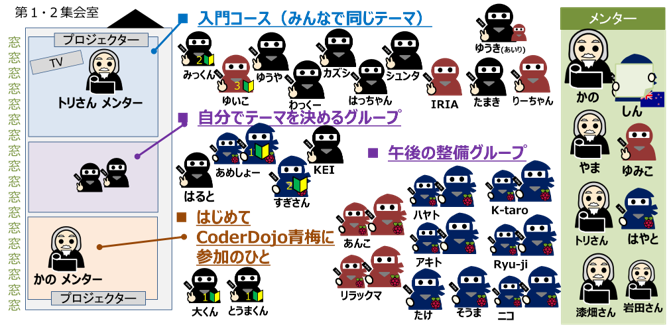
ゲストはマイクロマウス競技で受賞経験のある「厚木ロボット研究会の西崎さん」がデモ走行をしてくれました！
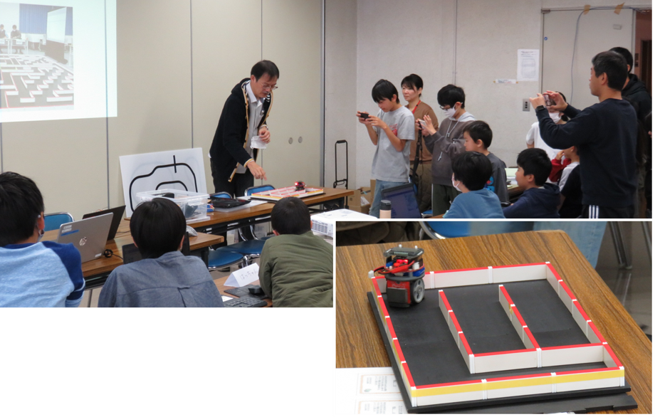
午前ワークショップ（Scratchプログラミング入門・初級）
午前は自分の興味にあわせて３ブロックに分かれてワークショップを行います。
１．みんなで共通テーマ
本日のScratch入門コースの講師はメンター「トリさん」がインベーダーゲームⅡの作り方をレクチャーしています。
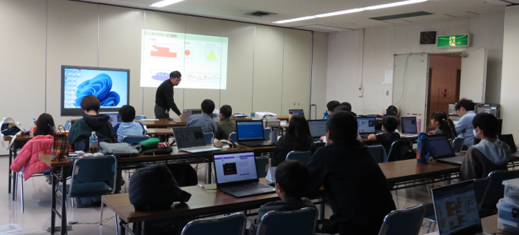
２．はじめて参加ニンジャ向け入門プログラミング
今日はじめて参加してくれたニンジャとニンジャ候補（年長さん）。驚いたことに年長なのに「右矢印キーを押したら右方向へ10歩進む」と「左方向」を教えたら、自分で「上下にも動かしたい」といって自分でコードを作り始めたこと。しかもマウス移動と右左ボタンをスムーズに操作できている！ 残り30分は斜め四方向にもコードを完成！。年長さんでここまでプログラミングできる子、みたことない。一緒にいたメンターも驚いていました。兄ニンジャはアスレチックのスタートとゴールを独自アニメで工夫して入門はクリアしました。
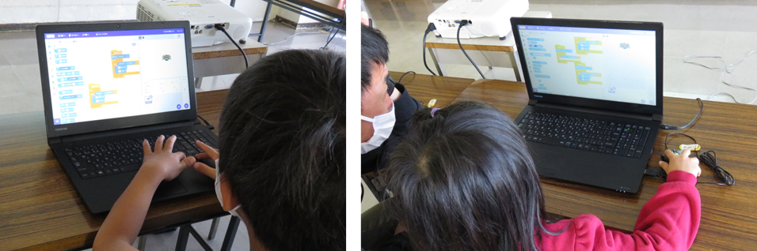
３．自分で自由にテーマを決める編
オリジナルScratch作品を作るニンジャ。マイクラの桜🌸？新バージョンで制作した世界を動画で発表してくれたニンジャ。
そして午後の大会に備えてラズタンクの整備・チューニング・魔改造をする上級ニンジャのみなさん
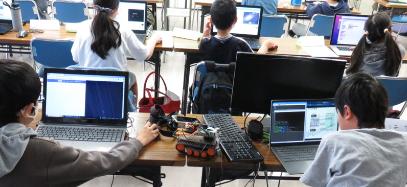
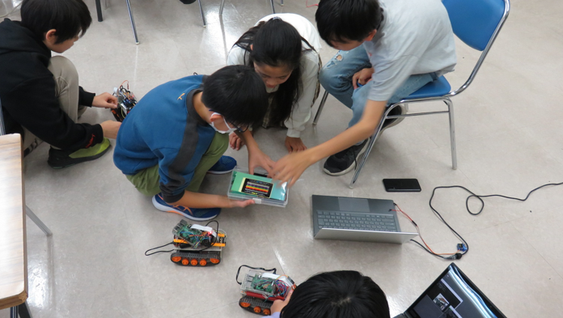
４．オンラインはお休み中です
オンラインメンターの「しん」さんが日本にいるので４月までオンラインはお休みです。
30分間は、みんなの成果発表会
初めて参加者、共通テーマ、自分で好きなテーマ。発表は何でもOK。マイクラ作品の説明を動画で紹介してくれるひとあり。 共通テーマであっても、ニンジャひとり一人の個性が出ています。
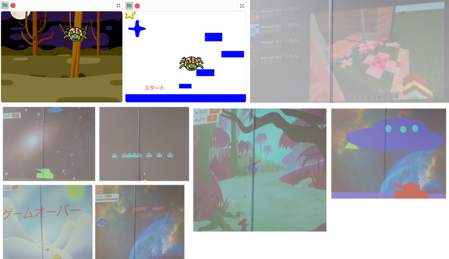
午後ワークショップ（ラズパイと電子工作）
ついに「🏆CoderDojo青梅カップ2023 競技大会」が開催されました。
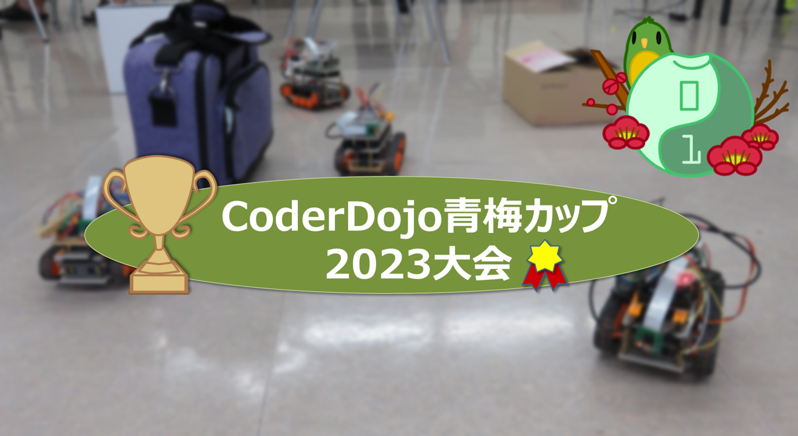
競技１．陸橋乗り越えチャレンジ
■コースは、陸橋型・直線のはしご状の路面（坂道）をスムーズに乗り越えるだけ
■ルールは、陸橋から落ちないこと・壊れないこと
■課題（得点）
・チャレンジ［+1］
・坂道を乗り越え［+1］
・逆走急坂［+2］
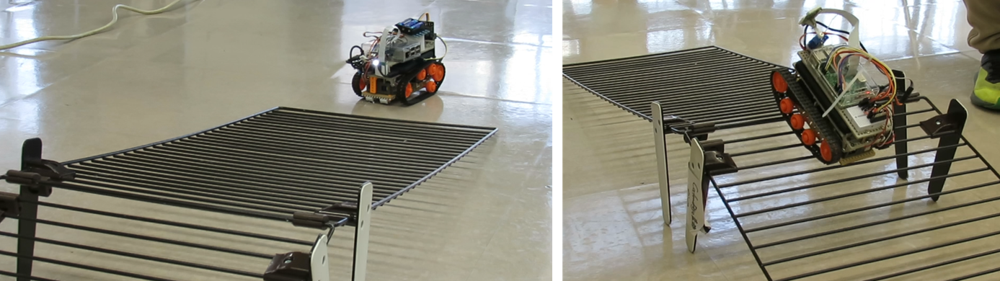
競技２．リモート操作・迷路探索
■コースは、簡単な迷路風の遠隔地にいるラズタンクをリモート操作する。カメラ画像をPCで見て操作する。
■ルールは、PC画面に表示されるラズパイカメラの画像を頼りにゴールを目指すこと。コースを背にしてPC画面を見る。後ろを振り向かない
■課題（得点）
・ひらがな発見［+1］
・キーワード正解［+1］
・画像撮影［+1］
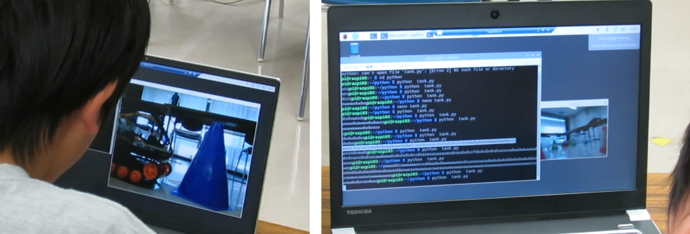
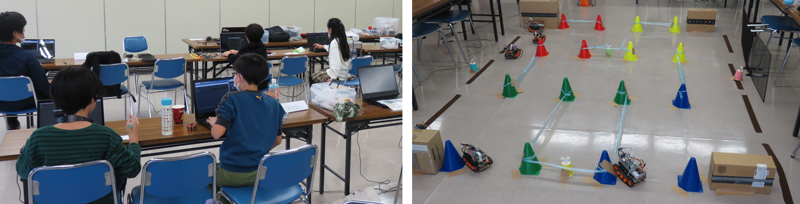
競技３．チーム対抗ピンポン玉運び
■コースは、グランドの周りの机が操縦席。制限時間５分間。目視でラズタンクを運転してコースを完走すること
■ルールは、コートを半分にして、相手のコートに多くピンポン玉を運んだチームが勝ち
■課題（得点）
コース途中に［ひらがな］看板が４つある。［ひらがな］を４つ並べた単語を審判へ報告
・参加したひと［+1］
・勝ったチーム全員［+3］
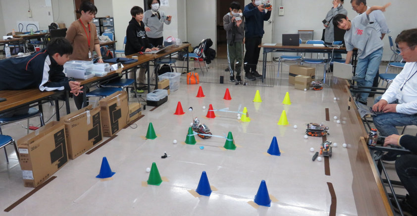
今日の模様はYoutubeでも動画を閲覧できます
次回は1月14日(日)開催です。
Connpassでイベント告知。参加をお待ちしています。参加申し込みはこちらのConnpassから
 CoderDojo青梅にご質問メールはこちら
CoderDojo青梅にご質問メールはこちら
😃